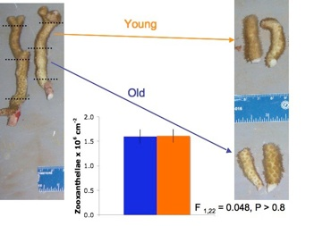

Robin Elahi, PhD
Marine Community Ecology and Population Biology
Research
Physiological consequences of age in corals
The disconnect between age and size in colonial corals, and the physiological consequences of this disconnect, struck me (a hapless unitary organism with a very predictable physiological timeline) during my first year as a masters student. I used an experiment (in Jamaica) with a branching coral (Madracis mirabilis) and a field survey (in St. John, US Virgin Islands) of a massive coral (Siderastrea siderea) to show that age does affect calcification and growth in coral fragments (i.e., ramets), despite the potential ‘immortality’ of entire colonies (i.e., genets)

Experimental method used to manipulate age in corals.